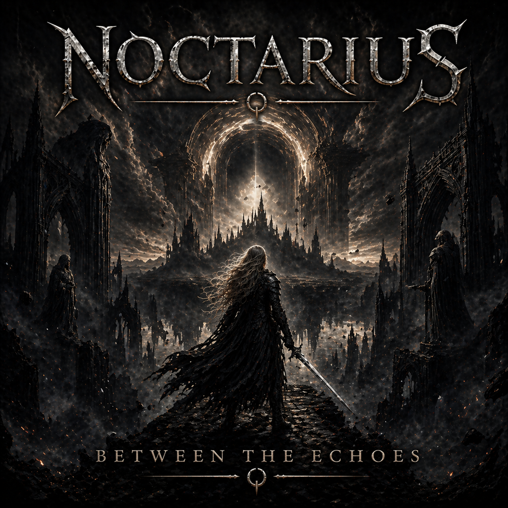

NOCTARIUS
Between the Echoes

A Symphony of Ashes
Talking low to empty rooms,
Only shadows answer back to me.
Trying hard to understand
How I became who I didn’t want to be.
No one warned me how the world can turn,
How love can fade before it burns.
So here I stand, unsure, afraid—
Waiting on a future I can’t name.
I’m too young to feel this broken,
Too old to keep my heart wide open.
Every promise slips through time,
Falling out of rhythm, out of line.
And if you’re somewhere trying to find me,
Know I’m drifting through the echoes quietly.
All the words you left behind
Still cut deeper than the silence now.
You say I never needed you—
But you were everything I couldn’t live without.
I’m learning how to walk alone,
How to rebuild a heart of stone.
If letting go is what it takes,
I’ll chase my freedom, win or break.
I’m too young to feel this broken,
Too old to keep my heart wide open.
Every promise slips through time,
Falling out of rhythm, out of line.
And if you’re somewhere trying to find me,
Know I’m drifting through the echoes quietly.
Seasons change and pull me forward,
Maybe I’ll get it right next time.
Falling isn’t failure if
You rise before you lose your light.
Storms grow closer by the minute,
Waves are higher than they’ve ever been.
Everything we built together
Washes out before it can begin.
I’ll never find someone to replace you,
But I’ll learn to face the nights without you.
If the world must change, then let it change—
I’ll find my strength between the echoes and the rain.